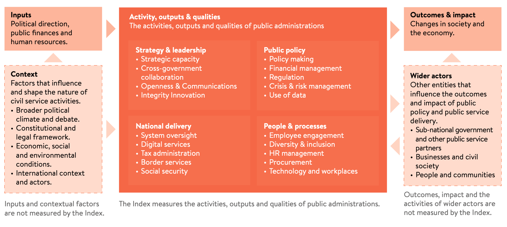

2 Conceptual framework
The framework the Index uses to describe the facets of public administrations and civil services.
In order to create an Index, a framework is needed that we can use to conceptually describe the activities and characteristics of a public administration and to align source data against. Our intention is for the framework to not only provide a theoretical underpinning to the Index but also ensure it is usable by practitioners. The conceptual framework for the Blavatnik Index of Public Administration builds on that developed for the InCiSE Index, but based on desk research and feedback from academic and practitioner stakeholders it adopts a restructured and expanded framework.

The core focus of the Index are the activities, characteristics and outputs of public administrations. These are organised into four domains that provide a high-level structure for thinking about the activities of public administrations:
- Strategy and Leadership – measuring activities that steer and coordinate the functioning of the public administration as well as the characteristics and values that support the stewardship of the institutions of the public administration.
- Public Policy – measuring the core executive activities of public administrations in support of the country’s national government.
- National Delivery – measuring public services delivered directly by national governments and the oversight of other systems of public service delivery.
- People and Processes – measuring the activities and characteristics in support of the public administration’s workforce.
In addition to the core components that are measured by the Index, our framework also identifies the aspects about the wider context which public administrations are situated within but are not measured by the Index.
Civil services and public administrations exist to execute the practical work of government, they take inputs (political direction, public finances and human resources) and turn them into outcomes and impact (economic, social and environmental changes). Public administrations also operate within their own national context (constitutional and legal frameworks; national political climate and debate; economic, social and environmental conditions; and, international context and actors) which can influence both the inputs they have available to them as well as their capacity to act or scope for action. There are also other actors (sub-national governments and other public service entities; businesses and civil society actors; communities and individual citizens) who influence the outcomes and impact of public policy and service delivery.
2.1 Strategy and Leadership domain
The Strategy and Leadership domain seeks to assess the setting of the strategic direction for the government’s programme of work, the stewardship of public institutions, and the overarching values that guide the behaviours of and approach taken by public officials. It is made up of five themes: strategic capacity; cross-government collaboration; openness and communications; integrity; and, innovation.
Strategic capacity
The strategic capacity theme seeks to measure the ability of the centre of government to set strategic direction and to ensure that the institutional structure of government remains fit for purpose. Centres of government support the political leader(s) of a national government and as such need to both set out a vision that other ministries and agencies can follow as well as ensure organisations have the resources and capacities to achieve the objectives they are tasked with (Barber 2016).
Cross-government collaboration
The cross-government collaboration theme seeks to measure the extent to which different parts of the national government work together in the development of policy or the delivery of services. In particular it aims to focus on voluntary collaboration, i.e. where ministries and agencies chose to work together in pursuit of a common goal (e.g. setting up a joint project team) rather than where they are mandated to work together as a result of other processes (e.g. debating policy proposals in a cabinet committee). Modern policy challenges are increasingly cross-sectoral in nature, necessitating multi-agency or whole-of-government responses (Verschuuren, Hilderink, and Vonk 2020). Such multi-agency collaboration must be more than formal committee processes, successful multi-agency collaboration fosters collective focus on the government-wide object rather than the narrower interests of specific ministries or programmes (Brown, Kohli, and Mignotte 2021).
Openness and communications
The openness and communications theme seeks to measure: the extent to which governments consult with citizens and stakeholders in policy development; the extent to which laws, regulations and government information is publicly available. The World Bank Group (2017) notes that “transparency initiatives [are] an important first step toward increasing accountability”. Ball (2009) summarises the uses of transparency in three metaphors: (i) ‘a public norm to counter corruption’; (ii) open government and decision making; and, (iii) transparency via evaluation of policy actions and programmes.
Integrity
The integrity theme seeks to measure the extent to which public officials make decisions and exercise their duties impartially and do not engage in corruption; integrity is often identified as a core value associated with public service. The International Civil Service Commission (2013) highlights the importance of integrity to the work of the United Nations (UN) common systems staff: “The concept of integrity … embraces all aspects of behaviour of an international civil servant … including … honesty, truthfulness, impartiality and incorruptibility. These qualities are as basic as those of competence and efficiency”. Many studies of good governance have used measures of integrity in their analyses, for instance Muriithi et al. (2015).
Innovation
The innovation theme seeks to measure the degree to which new ideas, policies, and ways of operating are able to develop freely. The importance of innovation for public sector organisations has been identified for over decade (OECD 2015b). Mulgan (2014) argues that innovation needs to be treated ‘with the same seriousness they deal with handling risk, financial controls or regulatory enforcement’.
2.2 Public Policy domain
The Public Policy domain seeks to assess the core public administration functions, the activities that are fundamental for any national government. It is made up of five themes: policy making; financial management; regulation; crisis and risk management; and, the use of data.
Policymaking
The policymaking theme seeks to measure the extent to which governments can develop effective policy. The formulation and implementation of sound policy is an essential function of government (Kaufmann, Kraay, and Zoido 1999). The OECD (2012) note the importance of high quality policy development and advice as a core requirement for good governance.
Financial management
The financial management theme seeks to measure the extent to which governments manage public money effectively. Holt and Manning (2014) note that fiscal and financial management is one of the central management systems of public administrations. While the mere adoption of a fiscal rule does not guarantee better fiscal performance, the latest cross-country analysis finds that well-designed fiscal rules are associated with lower government deficits, debts, and borrowing costs (Hughes, Leslie, and Pacitti 2019).
Regulation
The regulation theme seeks to measure the use of impact assessment in the development of regulations and that regulations are enforced properly and efficiently. The OECD (2012) “recognis[es] that regulations are one of the key levers by which governments act to promote economic prosperity, enhance welfare and pursue the public interest” and that “well designed regulations can generate significant social and economic benefits which out weigh the costs of regulation, and contribute to social well-being”. While Torfing and Triantafillou (2016) argue the importance of the collaborative development of regulation with citizens, proactive regulation can be a lever for social change, Aksoy et al. (2020) note that regulations legalising same-sex partnerships/marriages have led to increased acceptance of homosexuality in Europe.
Crisis and risk management
The crisis and risk management theme seeks to measure how well governments prepare for and manage critical risks to the functioning of their country’s society and economy. Baubion (2013) highlights crisis management as central to government’s role and a “fundamental element of good governance”. Christensen, Fimreite, and Lægreid (2011) discusses how credibility and trust in governments to deal with crises is vital both to reassure and encourage support from the private sector and general public.
Use of data
The use of data theme seeks to measure the extent to which governments have the data, information and skills necessary to develop policy and deliver public services. The importance and role of evidence-informed policy making is long understood (Langer, Tripney, and Gough 2016), the effective use of management information is also critical for improving the performance and operation of front-line services (Brown, Kohli, and Mignotte 2021).
2.3 National Delivery domain
The National Delivery domain seeks to assess the ability of the national government to oversee the delivery of public services, including those services it delivers itself. It should be noted that the responsibility and nature of public sector delivery varies considerably between jurisdictions, the Index does not and cannot seek to be a comprehensive comparative assessment of all types of public service delivery. Deliberately, the Index has sought to avoid services which are highly varied in their constitutional/operational arrangements and/or where their delivery is highly tied policy goals (e.g. health, education, labour market). This domain is made up of five themes: system oversight; digital services; tax administration; border services; and, social security.
System oversight
The system oversight theme seeks to measure the extent to which the government can achieve its policy objectives through its own means and through leadership and stewardship of wider delivery systems. Centres of government have an important role in holding ministries, agencies and others involved in the achievement of policy goals, to account and monitor progress (Barber 2016), effective central units also use their monitoring and accountability functions to collaboratively support and assist line ministries to achieve their objectives (Brown, Kohli, and Mignotte 2021).
Digital services
The digital services theme seeks to measure the government’s support for digital public services through the strategies and policies that support their development, the technologies that enable them to work effectively, and the end user experience. As identified by Sullivan et al. (2021) the digitization of services has become mandatory rather than preferable, because digital services can offer sizeable benefits in the speed, reliability, accuracy, and convenience of service provision (Hinkley 2022).
Tax administration
The tax administration theme seeks to measure the operational quality of a country’s national level tax administration. Fukuyama (2013) argues that taxation is a “necessary foundation of all states”, while Holt and Manning (2014) highlight the importance of tax administration in measuring the effectiveness of public administration.
Border services
The border services theme seeks to measure the operational quality of a country’s national borders, the extent to which legitimate goods/services can be transacted across the border and ease with which tourists and business visitors can enter/leave the country. The IMF (2012) notes that customs are often a bell-weather for the degree of corruption and arbitrariness in the public sector, and that effective reform can help improve perceptions of a country’s institutions. The adoption of “single-window” systems for customs operations are seen as crucial development in improving the efficiency of customs operations (UNECE 2020). International migration (i.e. the movement of people to move for medium- to long-term periods) is excluded as this is closely associated with policy intentions, with some countries having policy to explicitly encourage in-migration while others try to limit either in-migration or out-migration.
2.4 People and Processes domain
While the first three domains focus on the operational functioning of the public administration, in effect “what” public administrations do or “how” they do it, the People and Processes domain seeks to assess what and how it feels to work in or for the public administration. It is made up of five themes: employee engagement; diversity and inclusion; HR management; procurement; and, technology and workplaces.
Employee engagement
The employee engagement theme seeks to measure the extent to which those working in the public administration feel a sense of commitment and motivation to their work and have sufficient support and development to do their jobs well. Engaged employees enable staff “to give their best and to help [their organisation] succeed – and from that flows a series of tangible benefits for [the] organisation and individual alike” (MacLeod and Clarke 2009), Borst et al. (2020) find that the relationships between work engagement and other beneficial work-related attitudes tend to be stronger for public sector employees than for those in the private sector.
Diversity and inclusion
The diversity and inclusion theme seeks to measure the extent to which the public administration workforce reflects the population and society it serves. Apfelbaum, Phillips, and Richeson (2014) show that workforce diversity improves the quality and impartiality of decisions, while Talmor (2022) argues when some groups are not represented or are misrepresented that anger and mistrust of institutions follows. The OECD (2015a) identifies that “a more representative public administration can better access previously overlooked knowledge, networks and perspectives for improved policy development and implementation”.
HR management
The HR management theme seeks to measure the formal practices that govern the recruitment and management of an effective public administration workforce. As Bovaird and Loeffler (2023) note “around 70 per cent of the budgets of most public organisations are spent on staff” and thus “if the HR policies are not right, then public organisations will not attract the human resources they need to perform the functions of government and deliver the services that government has promised the electorate”. Fukuyama (2013) recognises that proper recruitment and reward of public servants “remain at the core of any measure of quality of governance” as well as the importance of merit in recruitment and promotion.
Procurement
The procurement theme seeks to measure the operational quality of public procurement practices. The World Bank (2020) notes that “public procurement accounts on average for 13% to 20% of GDP”, and that “[procurement] can play a strategic role in delivering more effective public services” (World Bank 2016).
Technology and workplaces
The technology and workplaces theme seeks to measure the enabling environment for public employees, the IT systems they use, the buildings they work in and the ways they work. It has long been recognised that governments need to keep up with technological advances, leveraging technology to “enhance the speed and efficiency of operations, by streamlining processes, lowering costs” (Madzova, Sajnoski, and Davcev 2013), adopting modern workplace technologies also helps officials to be more agile, creative and innovative in addition to enhancing productivity (OECD 2017). While there were moves to support remote working and leverage the opportunities of online technologies for collaboration, the COVID-19 pandemic presented a revolutionary moment for the uptake of these technologies as many governments mandated most or all of their workforces to work from home to combat the spread of the pandemic, in the post-pandemic period there are opportunities to realise continued benefits by continuing to support more diverse ways of working (OECD 2023).